Lo que sí sirve
Documentos, contratos, resoluciones, oficios, audios, videos, fotos, chats, registros de pagos. Lo que acompañe tu relato y lo sostenga. Con eso podemos trabajar desde el primer día.
Expedientes / Poder / Corrupción
Lo que el poder quería enterrado: laudos secretos, sistemas de sobornos, cárceles, aduanas, chats y estados de cuenta. 35 expedientes completos, con sus pruebas, sus videos y lo que pasó después.
Cuatro gobiernos de distinto signo político. Cada investigación es un objeto distinto sobre la mesa: una carpeta, un recibo, un teléfono, una hoja de registro. Tómalo.
Documentos, pruebas y conexiones. Cada caso es un objeto distinto: ábrelo y verás con qué se probó.

Una llave en el cuello, amenazas con su cédula y un rector que pidió silencio
Un sargento del Colegio Militar Miguel Iturralde de Portoviejo aplicó una llave en el cuello a un estudiante de 17 años y lo hizo arrojar al lodo. Cuando la madre denunció, el rector le pidió callar y llegaron amenazas de muerte con una copia de la cédula que solo tenía el colegio. Tras la publicación, Ochoa y el rector salieron del cargo, y la Asamblea y dos ministerios abrieron investigaciones.
Exp. 001Lee el caso completo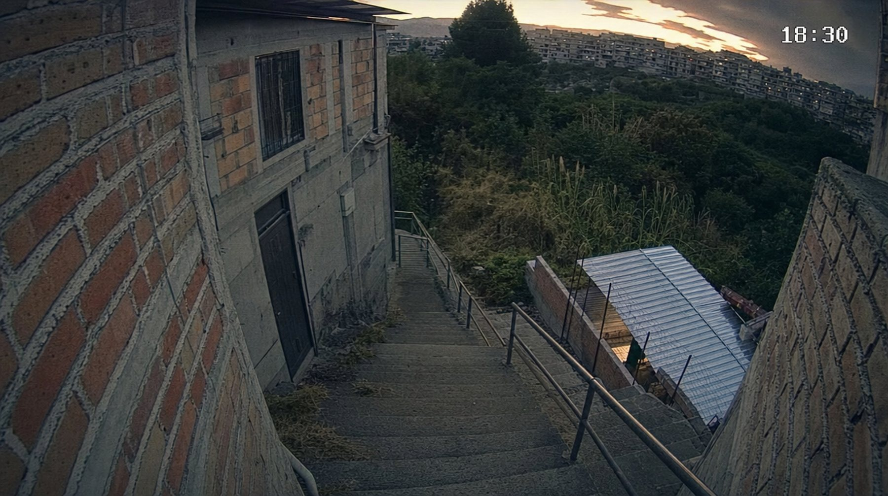
Una hora y veinte minutos hasta una quebrada de la Vicentina y un expediente lleno de contradicciones
Una estudiante de 20 años salió sola de la Escuela Politécnica Nacional, caminó más de una hora con un tobillo que se le hinchaba y apareció cinco días después en una quebrada de la Vicentina. Boscán y La Moni reconstruyeron su recorrido y expusieron el bolso que no estaba en la quebrada, el teléfono abierto sin cadena de custodia y las 48 horas sin denuncia.
Exp. 002Lee el caso completoLas pruebas del caso Progen que la fiscal guardó en un cajón
Tres técnicos de CELEC grabaron una prueba de vida en Houston y grabaron a escondidas a sus jefes mientras verificaban los generadores de Progen. Entregaron todo a la Fiscalía, que los procesó y dejó las pruebas fuera del expediente hasta que Boscán y La Moni las publicaron.
Exp. 003Lee el caso completo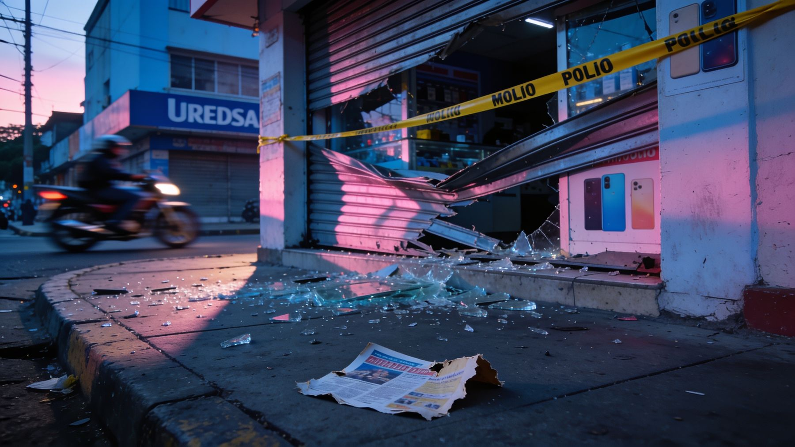
La modelo, el número dos de Los Lagartos y los policías del narco
Una bomba en el local de una presentadora de televisión abrió la puerta a la estructura de Los Lagartos: Connie Garcés, modelo y figura de la televisión guayaquileña, era pareja de Pedro Sánchez, el número dos de alias Marino. Después vinieron los nombres detrás del crimen de Marino y las fotos de los policías que le reportaban a un narcotraficante.
Exp. 004Lee el caso completo
El serbio que dio nombres: la cooperación eficaz que la Fiscalía mantiene en reserva
La vida del narcotraficante serbio cuyo caso derribó a Mario Godoy: 513 kilos en 2014, libre en 2018, traductor de un sicario en Viena y otra vez preso por los chats de Sky. Acorralado, firmó una cooperación eficaz con nombres de políticos y dinero en efectivo para campañas.
Exp. 005Lee el caso completo
La incautación que fue un robo
Marinos que simularon una incautación para robarle droga a un cartel y revenderla: cinco sacos en el parte, dieciocho en el agua. La Armada admitió la simulación y pidió la sanción máxima contra el capitán de fragata que la comandó.
Exp. 006Lee el caso completo
Cómo se lava dinero en las canchas del Ecuador
Cientos de archivos contables de un club de segunda categoría muestran dos nóminas: una bancarizada de 460 dólares y otra real de 2.500, pagada en efectivo. Lo preside Héctor Pesantes, condenado por lavar para la red de Gjika.
Exp. 007Lee el caso completo
Micaela Morales, Wendy Landa, Bryan Soria y el dinero del círculo de Marino
Los movimientos financieros de las jóvenes vinculadas al entorno de alias Marino, el líder de Los Lagartos asesinado en Mocolí: Micaela Morales, Wendy Landa, Bryan Soria y Andrés Vélez. Tarjetas, viajes, carteras y departamentos que no cuadran con ningún ingreso declarado, según los datos de la UAFE, el SRI y la banca.
Exp. 008Lee el caso completo
El cabecilla de Los Tiguerones cuenta cómo pactaba con el Gobierno y con la Policía
El presunto cabecilla de Los Tiguerones, libre en España tras una extradición fallida, describe en una llamada pactos con el Gobierno anterior para bajar las muertes los fines de semana y una Policía a la que propone controlar la calle. Dice que la comandante Tannya Varela se llevaba bien con Fito y con Junior Roldán.
Exp. 009Lee el caso completo
Los audios que probaron que la Judicatura presionaba a favor del narcotráfico
Los audios en que la mano derecha del presidente de la Judicatura pide a un juez anticorrupción 'atención a la defensa' de un narcotraficante serbio que había sido cliente de la esposa de Godoy. Sesenta y cuatro días después la Asamblea lo censuró y destituyó con 148 votos y ninguno en contra.
Exp. 010Lee el caso completo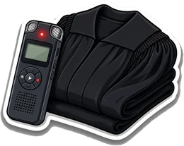

Doce muertes reconocidas, dieciocho denunciadas y una bacteria en la sala de neonatología
Andersson Boscán denunció que 18 recién nacidos habían muerto en el Hospital Universitario de Guayaquil con cánulas reutilizadas; el hospital lo negó y un día después el Ministerio reconoció 12 muertes, dos por la bacteria KPC. El gerente fue despedido, la coordinadora zonal removida y la Fiscalía y la Asamblea abrieron investigaciones.
Exp. 011Lee el caso completo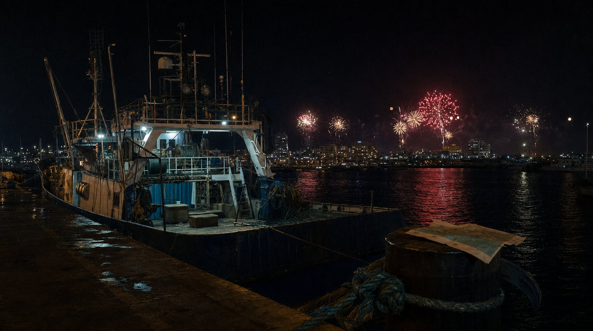
Seis muertos, un puerto y el barco que nadie incauta
Leo Briones pasó de cargar cocaína con sus manos a controlar el puerto de Manta con policías, militares y fiscales a sueldo, hasta que unos hombres de uniforme militar lo emboscaron con su esposa en julio de 2025. En seis meses mataron a su hermano, a su hijo de 16 años y a su socio; nadie ha sido procesado y el barco por el que citaron al muchacho sigue matriculado a nombre de la misma empresa.
Exp. 012Lee el caso completo
El búnker, la carta, la videollamada y el avión a Brooklyn
La recaptura de alias Fito en un búnker de Monterrey, entre Manta y Montecristi, contada con lo que el Gobierno tardó una semana en admitir: tres vías de negociación rechazadas, una videollamada de veinte minutos con el ministro del Interior y una carta a la embajadora de Colombia. Las fotos exclusivas de la casa, la caleta con cuatro Rolex, el avión a Brooklyn, el sicario que llamó desde México y los hermanos que cayeron en 2026.
Exp. 013Lee el caso completo
La compra de Loffredo que la Fiscalía terminó investigando
Los chalecos y cascos comprados para las Fuerzas Armadas que, según un documento del propio Ejército, no protegen. El proveedor estaba declarado incumplido por el Estado.
Exp. 014Lee el caso completo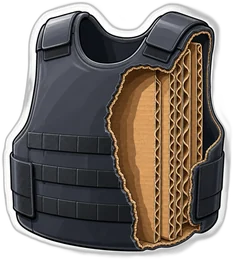

Lo que guardaba el teléfono de Fernando Villavicencio
9.000 chats y 68 gigabytes verificados durante un mes: la fiscal, el operador que pagaba cada mes, los jueces y las amenazas.
Exp. 015Lee el caso completo
Las empresas legales del narco y la Fiscalía que no actuó
71 empresas de Dritan Gjika seguían activas un año y siete meses después de El Gran Padrino: nadie las procesaba ni les congelaba los activos. Un operativo con aviso, un liquidador que vendió a su hija y una Fiscalía que no actuó.
Exp. 016Lee el caso completo
Narcopolítica en el Gobierno de Lasso
El cuñado del presidente, un operador ligado a la mafia albanesa y las empresas públicas repartidas como botín. Por primera vez en casi un siglo, un presidente fue a juicio político.
Exp. 017Lee el caso completo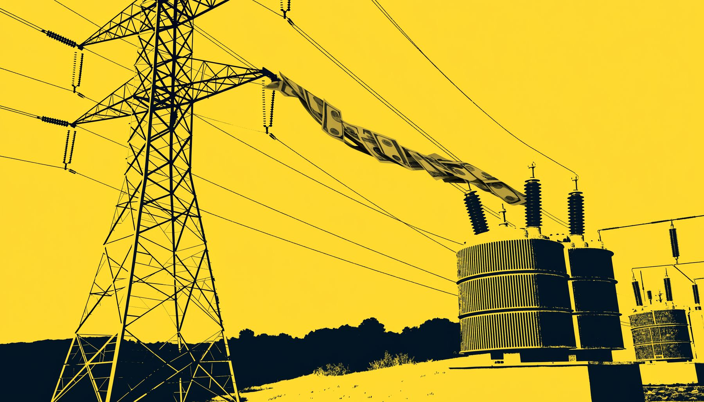
Los audios del ministro de Energía
Una amenaza por 150.000 dólares, el audio del gerente de Petroecuador y un ministro que renunció en cinco días. Absuelto en 2026.
Exp. 018Lee el caso completo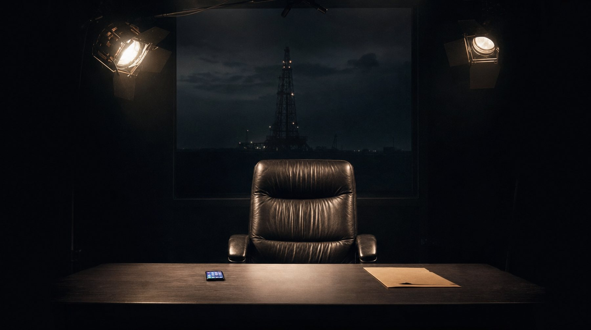
El gerente de Petroecuador que reconoció al aire la influencia de su esposa
El gerente general de Petroecuador se sentó en Café la Posta a responder por los audios, chats y el informe de inteligencia que mostraban a su esposa recomendando carpetas y dirigiendo contrataciones. Al aire reconoció que ella tuvo influencia en su cargo y que se lo confesó a Lasso en una reunión reservada. Esa noche Lasso pidió al directorio cesarlo y al día siguiente renunció.
Exp. 019Lee el caso completoLa venta de cargos en las aduanas
Tres millones por el puesto que decide qué contenedor se abre. El expediente, la mano de Pozo y la comparecencia en la Asamblea.
Exp. 020Lee el caso completo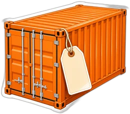

Vocales, jueces presionados y un pedido hecho en nombre del presidente
Un testigo grabó a los vocales Juan José Morillo y Maribel Barreno en el despacho del presidente de la Corte Provincial de Pichincha, pidiéndole en nombre del presidente Lasso apoyar la causa de Guadalupe Llori. La Posta lo publicó el 15 de junio de 2022; quince meses después la Fiscalía formuló cargos por tráfico de influencias y un juez ordenó prisión preventiva para Barreno.
Exp. 021Lee el caso completo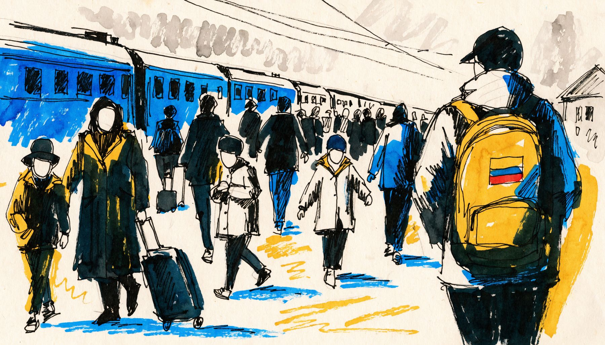
Cobertura especial desde la guerra
Reportería desde territorio ucraniano durante la invasión rusa.
Exp. 022Lee el caso completo
Los generales que cerraron León de Troya y la comandante a la que los narcos llamaban la madrina
Los generales Ponce y Vargas se escucharon en audio ordenando cerrar León de Troya, la investigación que puso al cuñado del presidente junto a la mafia albanesa, y la comandante Tannya Varela contó que Lasso ya había hablado con su cuñado. Los narcos la llamaban la madrina; cuatro años después de entrar a Carondelet sin bitácora fue detenida junto con los policías que investigaron.
Exp. 023Lee el caso completo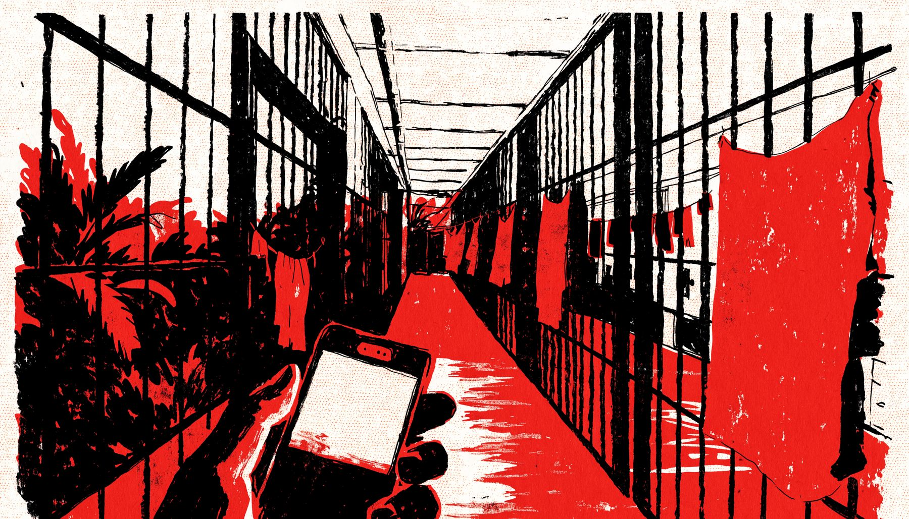
La primera vez que alguien entró a los pabellones sin custodia del Estado
Cuatro documentales desde adentro de las cárceles y los territorios de las bandas. La serie que precedió a las mesas de paz entre Estado, Iglesia y grupos armados, y las primeras amenazas de muerte.
Exp. 024Lee el caso completo
Quiénes se saltaron la fila de la vacuna
La lista de quienes se saltaron la fila de la vacuna contra el covid en enero de 2021 gracias a sus contactos políticos. El ministro de Salud renunció y salió del país.
Exp. 025Lee el caso completo
Hospitales públicos a cambio de votos en la Asamblea
Hospitales públicos entregados a asambleístas a cambio de votos en plena pandemia. La ministra de Gobierno fue censurada y destituida con 104 votos.
Exp. 026Lee el caso completo
Plata pública en la campaña del Sí de 2018
El dinero de empresas públicas que pagó la campaña por el Sí en la consulta popular de 2018. La Comisión de Fiscalización abrió una investigación a partir del informe.
Exp. 027Lee el caso completoLos contratos de la familia del prefecto del Guayas
Mascarillas a 6,71, empresas de papel con el mismo contador, una offshore familiar y un prefecto que murió a los 19 días del allanamiento.
Exp. 028Lee el caso completo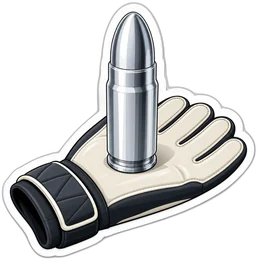

La filtración de los sobornos de Odebrecht en América Latina
Más de 13.000 documentos del departamento de sobornos de Odebrecht, entregados en Quito y trabajados con el Consorcio Internacional de Periodistas de Investigación y 18 medios de América.
Exp. 029Lee el caso completoPruebas de VIH falladas y compras podridas en el Ministerio de Salud
Cuatro reportajes y una entrevista con la fuente sobre las pruebas de VIH y las compras del Ministerio de Salud. La ministra Verónica Espinosa terminó censurada por la Asamblea.
Exp. 030Lee el caso completo
Los 45 segundos del COSEPE que contradijeron al presidente durante el secuestro de los tres periodistas
La Posta publicó 45 segundos grabados dentro de un Consejo de Seguridad Pública y del Estado durante el secuestro de los tres periodistas de El Comercio: Lenín Moreno decía que la soberanía de un Estado iba más allá de una o algunas vidas, mientras a las familias se les hablaba de un canje. La desclasificación total que prometió el 13 de abril de 2018 nunca llegó; en 2025 admitió que militares y policías la frenaron.
Exp. 031Lee el caso completo
Los diezmos en la Asamblea Nacional
El audio en que una asambleísta explica cómo cobrar el diez por ciento del sueldo a sus asesores. Destitución y condena.
Exp. 032Lee el caso completo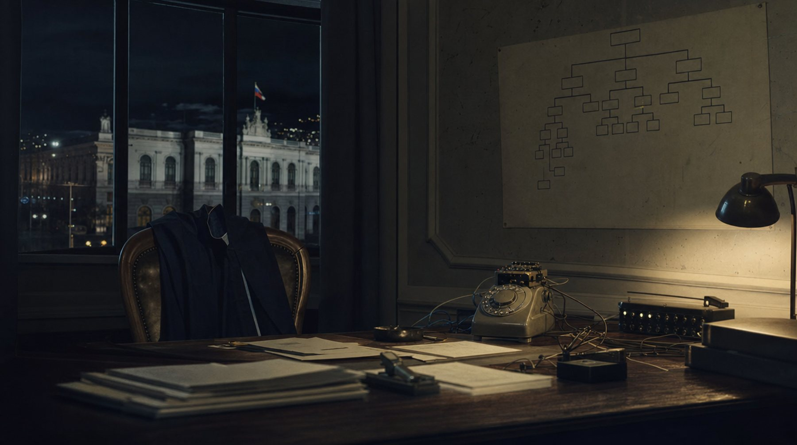
La cúpula de la Senain de Rommy Vallejo, nombre por nombre
Agentes de la seguridad interna de la Presidencia entregaron a La Posta cómo operaba la Senain de Rommy Vallejo: gastos reservados maquillados, un troll center, escuchas con siete interceptores que desaparecieron, phishing contra opositores y Yasunidos, grupos de choque pagados por día y dos agentes infiltrados en la seguridad de Lenín Moreno. Moreno separó al infiltrado; el resto del esquema quedó impune.
Exp. 033Lee el caso completo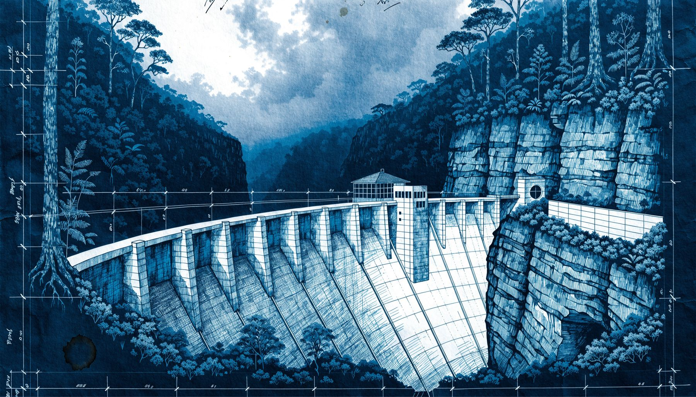
La primera investigación fiscal contra el vicepresidente Jorge Glas
La consultora que pagó coimas a funcionarios ecuatorianos a través de dos sociedades creadas en Mossack Fonseca. La pista que llevó a la Fiscalía hasta el entorno del vicepresidente.
Exp. 034Lee el caso completo
Investigación sobre la minería ilegal y el mercurio en el sur del país
Siete entregas sobre el mercurio prohibido que seguía envenenando ríos, aire, leche y sangre en la zona minera del sur. Al día siguiente de la primera entrega, la Asamblea ratificó el Convenio de Minamata por unanimidad.
Exp. 035Lee el caso completoCada nota amarilla dice qué provocó la investigación.
Destituciones, censuras, condenas, investigaciones fiscales, cambios de ley. Elige un desenlace para recorrer el archivo.
Siete entregas sobre el mercurio prohibido que seguía envenenando ríos, aire, leche y sangre en la zona minera del sur. Al día siguiente de la primera entrega, la Asamblea ratificó el Convenio de Minamata por unanimidad.
La consultora que pagó coimas a funcionarios ecuatorianos a través de dos sociedades creadas en Mossack Fonseca. La pista que llevó a la Fiscalía hasta el entorno del vicepresidente.
El audio en que una asambleísta explica cómo cobrar el diez por ciento del sueldo a sus asesores. Destitución y condena.
Más de 13.000 documentos del departamento de sobornos de Odebrecht, entregados en Quito y trabajados con el Consorcio Internacional de Periodistas de Investigación y 18 medios de América.
Cuatro reportajes y una entrevista con la fuente sobre las pruebas de VIH y las compras del Ministerio de Salud. La ministra Verónica Espinosa terminó censurada por la Asamblea.
El dinero de empresas públicas que pagó la campaña por el Sí en la consulta popular de 2018. La Comisión de Fiscalización abrió una investigación a partir del informe.
Mascarillas a 6,71, empresas de papel con el mismo contador, una offshore familiar y un prefecto que murió a los 19 días del allanamiento.
Hospitales públicos entregados a asambleístas a cambio de votos en plena pandemia. La ministra de Gobierno fue censurada y destituida con 104 votos.
Cuatro documentales desde adentro de las cárceles y los territorios de las bandas. La serie que precedió a las mesas de paz entre Estado, Iglesia y grupos armados, y las primeras amenazas de muerte.
La lista de quienes se saltaron la fila de la vacuna contra el covid en enero de 2021 gracias a sus contactos políticos. El ministro de Salud renunció y salió del país.
Tres millones por el puesto que decide qué contenedor se abre. El expediente, la mano de Pozo y la comparecencia en la Asamblea.
Reportería desde territorio ucraniano durante la invasión rusa.
Una amenaza por 150.000 dólares, el audio del gerente de Petroecuador y un ministro que renunció en cinco días. Absuelto en 2026.
El cuñado del presidente, un operador ligado a la mafia albanesa y las empresas públicas repartidas como botín. Por primera vez en casi un siglo, un presidente fue a juicio político.
71 empresas de Dritan Gjika seguían activas un año y siete meses después de El Gran Padrino: nadie las procesaba ni les congelaba los activos. Un operativo con aviso, un liquidador que vendió a su hija y una Fiscalía que no actuó.
9.000 chats y 68 gigabytes verificados durante un mes: la fiscal, el operador que pagaba cada mes, los jueces y las amenazas.
Los chalecos y cascos comprados para las Fuerzas Armadas que, según un documento del propio Ejército, no protegen. El proveedor estaba declarado incumplido por el Estado.
Los movimientos financieros de las jóvenes vinculadas al entorno de alias Marino, el líder de Los Lagartos asesinado en Mocolí: Micaela Morales, Wendy Landa, Bryan Soria y Andrés Vélez. Tarjetas, viajes, carteras y departamentos que no cuadran con ningún ingreso declarado, según los datos de la UAFE, el SRI y la banca.
Cientos de archivos contables de un club de segunda categoría muestran dos nóminas: una bancarizada de 460 dólares y otra real de 2.500, pagada en efectivo. Lo preside Héctor Pesantes, condenado por lavar para la red de Gjika.
Una bomba en el local de una presentadora de televisión abrió la puerta a la estructura de Los Lagartos: Connie Garcés, modelo y figura de la televisión guayaquileña, era pareja de Pedro Sánchez, el número dos de alias Marino. Después vinieron los nombres detrás del crimen de Marino y las fotos de los policías que le reportaban a un narcotraficante.
El presunto cabecilla de Los Tiguerones, libre en España tras una extradición fallida, describe en una llamada pactos con el Gobierno anterior para bajar las muertes los fines de semana y una Policía a la que propone controlar la calle. Dice que la comandante Tannya Varela se llevaba bien con Fito y con Junior Roldán.
Un testigo grabó a los vocales Juan José Morillo y Maribel Barreno en el despacho del presidente de la Corte Provincial de Pichincha, pidiéndole en nombre del presidente Lasso apoyar la causa de Guadalupe Llori. La Posta lo publicó el 15 de junio de 2022; quince meses después la Fiscalía formuló cargos por tráfico de influencias y un juez ordenó prisión preventiva para Barreno.
La recaptura de alias Fito en un búnker de Monterrey, entre Manta y Montecristi, contada con lo que el Gobierno tardó una semana en admitir: tres vías de negociación rechazadas, una videollamada de veinte minutos con el ministro del Interior y una carta a la embajadora de Colombia. Las fotos exclusivas de la casa, la caleta con cuatro Rolex, el avión a Brooklyn, el sicario que llamó desde México y los hermanos que cayeron en 2026.
Los audios en que la mano derecha del presidente de la Judicatura pide a un juez anticorrupción 'atención a la defensa' de un narcotraficante serbio que había sido cliente de la esposa de Godoy. Sesenta y cuatro días después la Asamblea lo censuró y destituyó con 148 votos y ninguno en contra.
Agentes de la seguridad interna de la Presidencia entregaron a La Posta cómo operaba la Senain de Rommy Vallejo: gastos reservados maquillados, un troll center, escuchas con siete interceptores que desaparecieron, phishing contra opositores y Yasunidos, grupos de choque pagados por día y dos agentes infiltrados en la seguridad de Lenín Moreno. Moreno separó al infiltrado; el resto del esquema quedó impune.
Leo Briones pasó de cargar cocaína con sus manos a controlar el puerto de Manta con policías, militares y fiscales a sueldo, hasta que unos hombres de uniforme militar lo emboscaron con su esposa en julio de 2025. En seis meses mataron a su hermano, a su hijo de 16 años y a su socio; nadie ha sido procesado y el barco por el que citaron al muchacho sigue matriculado a nombre de la misma empresa.
La Posta publicó 45 segundos grabados dentro de un Consejo de Seguridad Pública y del Estado durante el secuestro de los tres periodistas de El Comercio: Lenín Moreno decía que la soberanía de un Estado iba más allá de una o algunas vidas, mientras a las familias se les hablaba de un canje. La desclasificación total que prometió el 13 de abril de 2018 nunca llegó; en 2025 admitió que militares y policías la frenaron.
La vida del narcotraficante serbio cuyo caso derribó a Mario Godoy: 513 kilos en 2014, libre en 2018, traductor de un sicario en Viena y otra vez preso por los chats de Sky. Acorralado, firmó una cooperación eficaz con nombres de políticos y dinero en efectivo para campañas.
Los generales Ponce y Vargas se escucharon en audio ordenando cerrar León de Troya, la investigación que puso al cuñado del presidente junto a la mafia albanesa, y la comandante Tannya Varela contó que Lasso ya había hablado con su cuñado. Los narcos la llamaban la madrina; cuatro años después de entrar a Carondelet sin bitácora fue detenida junto con los policías que investigaron.
Un sargento del Colegio Militar Miguel Iturralde de Portoviejo aplicó una llave en el cuello a un estudiante de 17 años y lo hizo arrojar al lodo. Cuando la madre denunció, el rector le pidió callar y llegaron amenazas de muerte con una copia de la cédula que solo tenía el colegio. Tras la publicación, Ochoa y el rector salieron del cargo, y la Asamblea y dos ministerios abrieron investigaciones.
Marinos que simularon una incautación para robarle droga a un cartel y revenderla: cinco sacos en el parte, dieciocho en el agua. La Armada admitió la simulación y pidió la sanción máxima contra el capitán de fragata que la comandó.
Una estudiante de 20 años salió sola de la Escuela Politécnica Nacional, caminó más de una hora con un tobillo que se le hinchaba y apareció cinco días después en una quebrada de la Vicentina. Boscán y La Moni reconstruyeron su recorrido y expusieron el bolso que no estaba en la quebrada, el teléfono abierto sin cadena de custodia y las 48 horas sin denuncia.
Andersson Boscán denunció que 18 recién nacidos habían muerto en el Hospital Universitario de Guayaquil con cánulas reutilizadas; el hospital lo negó y un día después el Ministerio reconoció 12 muertes, dos por la bacteria KPC. El gerente fue despedido, la coordinadora zonal removida y la Fiscalía y la Asamblea abrieron investigaciones.
Tres técnicos de CELEC grabaron una prueba de vida en Houston y grabaron a escondidas a sus jefes mientras verificaban los generadores de Progen. Entregaron todo a la Fiscalía, que los procesó y dejó las pruebas fuera del expediente hasta que Boscán y La Moni las publicaron.
El gerente general de Petroecuador se sentó en Café la Posta a responder por los audios, chats y el informe de inteligencia que mostraban a su esposa recomendando carpetas y dirigiendo contrataciones. Al aire reconoció que ella tuvo influencia en su cargo y que se lo confesó a Lasso en una reunión reservada. Esa noche Lasso pidió al directorio cesarlo y al día siguiente renunció.
Toca una persona para tensar el hilo hacia sus expedientes. Toca un expediente para abrirlo.
Casi todo lo que está en esta mesa empezó con alguien que decidió contar lo que sabía. Escríbenos por WhatsApp, a cualquiera de los dos. Leemos todo.
Documentos, contratos, resoluciones, oficios, audios, videos, fotos, chats, registros de pagos. Lo que acompañe tu relato y lo sostenga. Con eso podemos trabajar desde el primer día.
El dato suelto, por bueno que suene, no se puede publicar. Sin algo que lo respalde se queda en chisme, y de eso nos llega mucho. Si tienes el papel, aunque sea una foto del papel, mándalo.
Verificamos antes de publicar y jamás decimos quién nos lo dio. Ninguna fuente de estos diez años ha sido expuesta por nosotros. Si el caso no se sostiene, te lo decimos de frente.
Si el material es delicado, dilo en el primer mensaje y coordinamos por dónde enviarlo.
Diez años y cuatro gobiernos de distinto signo. La misma regla en todos: nada se publica sin el documento que lo sostenga, y cada caso se sigue hasta su desenlace, gane quien gane.
Casi todo lo que está en esta mesa empezó con una llamada. A él lo buscan los que se cansan: los agentes que entregaron el organigrama de la Senain, los técnicos de CELEC que grabaron a sus jefes en un hotel de Houston, el testigo que grabó a los vocales de la Judicatura en el despacho de un juez, el cabecilla que habló por teléfono desde España. Su primer oficio fue la prensa escrita: en Diario Expreso publicó La Mancha Dorada, siete entregas sobre el mercurio que envenenaba los ríos del sur, y Caminosca, el arbitraje privado en Estados Unidos donde el vicepresidente en funciones aparecía con un alias, Vidrio.
En 2018 cofundó La Posta y la dirigió hasta venderla en 2025. De esa etapa salieron los vacunados VIP, que costaron el cargo al ministro de Salud, Bribery Division con el consorcio ICIJ y El Gran Padrino: siete periodistas durante seis meses y treinta y cuatro entregas sobre cómo el cuñado del presidente Lasso repartía las empresas públicas. Por primera vez en casi un siglo un presidente ecuatoriano enfrentó un juicio político por corrupción, y disolvió la Asamblea para no llegar a la votación.
Salió del país en 2023, después de las amenazas que documentó el Comité para la Protección de los Periodistas. Sigue publicando desde el exilio, cofundó la Red de Periodistas Libres y hoy conduce Boscán & La Moni.
Lo que llega hay que poder probarlo. Ella arma el expediente: cruza contratos, registros mercantiles, roles de pago, actas y chats hasta que la historia se sostiene sola. En el último recorrido de Nathaly Mafla reconstruyó hora por hora el camino de la estudiante con las cámaras del barrio, y lo que quedó publicado no fue una sospecha sino una lista: el bolso que no estaba en la quebrada, el teléfono revisado fuera de la cadena de custodia y las cuarenta y ocho horas que pasaron sin denuncia.
Con Andersson firmó Bribery Division, El Gran Padrino y los archivos del teléfono de Fernando Villavicencio, nueve mil chats que hubo que verificar contacto por contacto antes de publicar una línea. También reportea donde pasan las cosas: entró a los pabellones de la Penitenciaría para Paz o plomo, cubrió la invasión rusa desde Ucrania en las primeras semanas y caminó el puerto de Manta detrás de la familia Briones.
En 2024 la International Women's Media Foundation le entregó el Premio a la Valentía en el Periodismo por seguir publicando bajo amenaza y desde el exilio. Hoy conduce Boscán & La Moni y lidera EUREKA, su proyecto sobre emprendimiento y negocios.